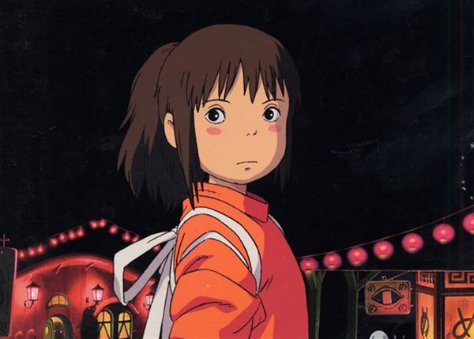
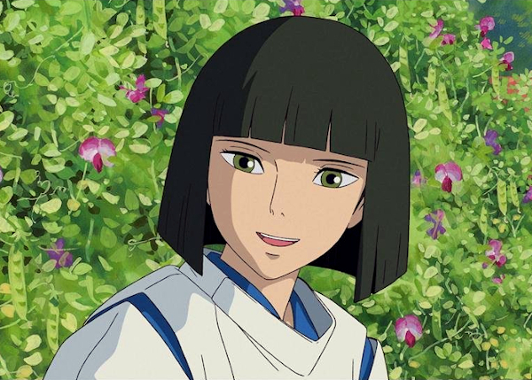
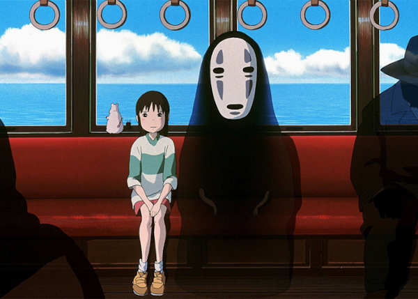
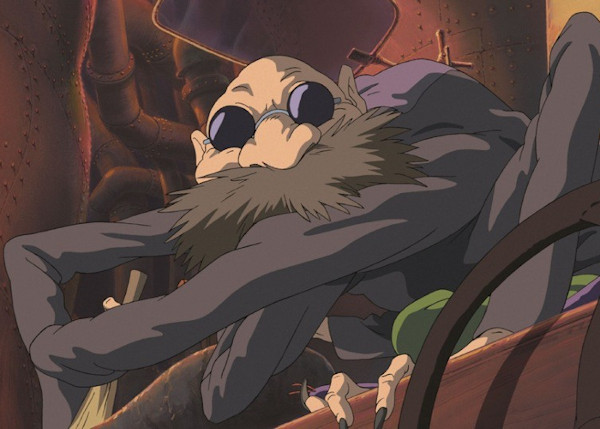
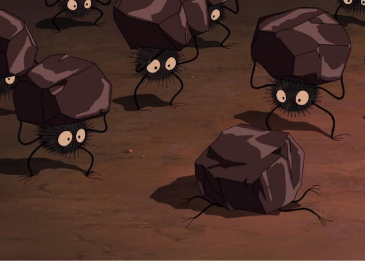
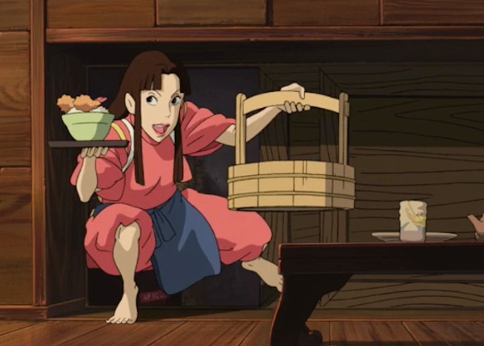
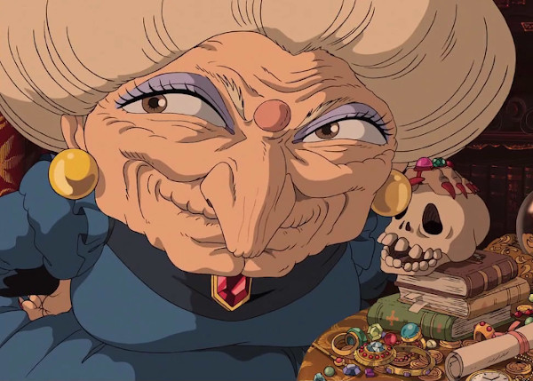
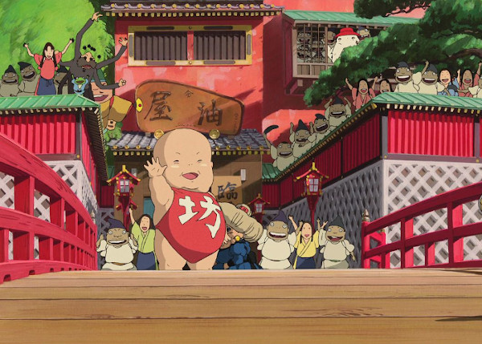
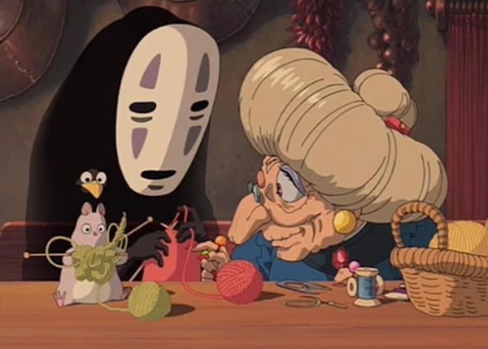

Chihiro
Chihiro Ogino is a ten year old girl and the main protagonist.
While moving to a new town, Chihiro and her parents stumble into the spirit world by accident. Not realizing they had traversed onto a new plane, her parents find themselves in trouble as they are transformed into pigs. Alone and scared, Chihiro must find a way to save her parents and return to the human world or suffer the same fate. Through the help of friends, she starts to work in a bathhouse for a witch called Yubaba, who takes her name and changes it to Sen. Follow along Chihiro's journey as she learns and grows from her time within the spirit world.
Haku
Haku is a seemingly young boy shrouded in secrets and the secondary main character.
While Chihiro is lost within the spirit world, she comes across a mysterious boy named Haku. Chihiro decides to trust him, and he leads her to Yubaba's bathhouse, so she can ask for a job in order to avoid being turned into an animal, like her parents. Haku is Yubaba's right hand man who often runs errands for her, and he has a questionable reputation among the resident workers within the bathhouse. He can be aloof and stern towards Chihiro one moment, and kind and considerate the next, making his true intentions uncertain.
No-Face aka Kaonashi
No-Face is a wandering spirit who stumbles upon Yubaba's business. He is impressionable, sensitive to other's emotions, and can ingest others to take on their personality and physical traits.
Chihiro first comes across No-Face without any knowledge on who he is or what he is capable of. She shows kindness to the spirit by allowing him to enter the bathhouse, but chaos ensues. No-Face is eager to please all those he encounters, but is overwhelmed by the plethora of positive and, more importantly, negative emotions within the bathhouse.
Kamaji
Kamaji is an elderly man with six long arms, who is in charge of running the bathhouse's boiler room, with the help of his Soot Sprite workers. The Soot sprites help maintain the furnace fire, while Kamaji manages guests' requests by supplying herbal bathwater.
Chihiro meets Kamaji during her quest to obtain a job. Upon their first encounter, Kamaji is unimpressed and unfriendly towards Chihiro. He attempts to turn her away, but is met with an unwavering determination. Their relationship slowly grows as Chihiro spends more time within the confines of the bathhouse.
Soot Sprites
Soot Sprites are soot balls imbued with magic for the sole purpose of working. They possess strength far greater than their tiny size, and assist Kamaji in running the boiler room by fueling the furnace when it's in need of coal. They are paid in star shaped food and must continue to work, otherwise they will turn back to soot.
Chihiro discovers the Soot Sprites during her meeting with Kamaji. Through her kindness, the Soot Sprites become fast allies who cheer her on throughout her journey.
Lin
Lin, although taking the appearance of a human, is a Byakko – white tiger spirit – and works at the bathhouse as a Yuna – a female who lives and works at Yubaba's business.
Among many others, Lin is skeptical and unsure of Chihiro's presence. Despite her initial skepticism, she decides to stick her neck out for the young girl. Lin is eventually tasked with the responsibility of taking care of the child as she becomes Lin's assistant, and, under the supervision of Lin, Chihiro learns the ins and outs of working at the bathhouse.
Yubaba
Yubaba is an overbearing and intimidating witch and the main antagonist. She is the proprietor of the bathhouse, has a son named Bôh, and has a pet bird. She can come off as being frugal and selfish, but runs her bathhouse professionally and is willing to acknowledge the hard work of others.
After traversing the inner quarters of the bathhouse, Chihiro comes face to face with Yubaba. Squaring up to the businesswoman herself, Chihiro won't take no for an answer as she begs for a job. Yubaba's patience grows thin, as she doesn't see the merit in hiring a human to work at her establishment. Regardless, Yubaba concedes due to an unplanned disturbance and creates a contract with Chihiro in exchange for her name, renaming her Sen.
Baby aka Bôh
Bôh is Yubaba's mysophobic and extremely spoiled son. He is used to getting whatever he wants, when he wants it.
A chance encounter with Chihiro and Zeniba sends Bôh on the biggest adventure of his life yet. Zeniba, wanting to teach the overindulged baby a lesson, turns him into a mouse. During this encounter, Yubaba's bird is also transformed, turning into a tiny and feeble version of itself. Bôh, accompanied by Yubaba's pet bird, sets out on a quest to find Zeniba and be turned back to normal.
Zeniba
Zenniba is a peaceful witch and Yubaba's identical twin sister. Yubaba and Zeniba are often at odds with each other as their personalities are polar opposites.
Chihiro and her friends venture outside of the bathhouse to find Zeniba and right a wrong. Despite how scary she first seemed, Chihiro quickly realizes that she is a kind and hospitable woman who brings Chihiro a lot of comfort while in a brand new world.